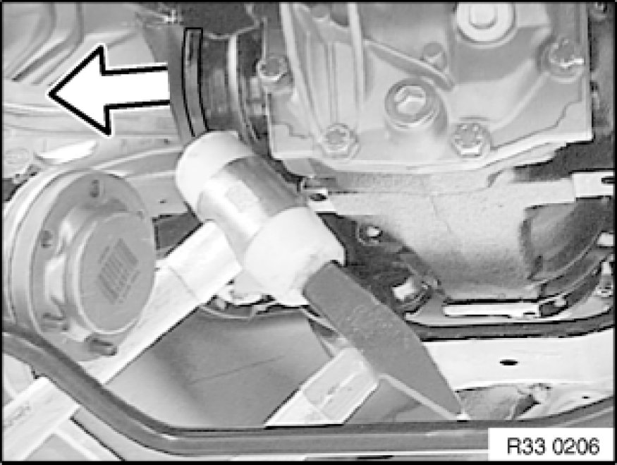
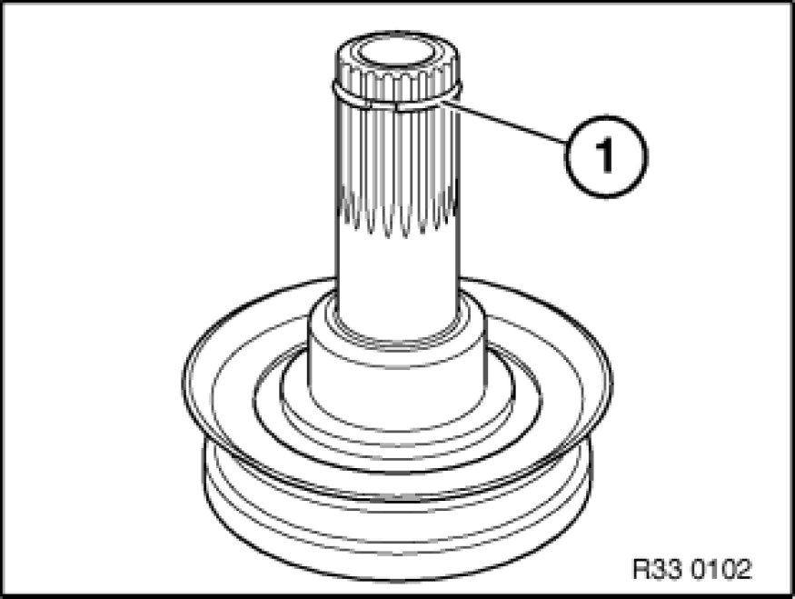

Replacing Left Drive Flange on Rear Differential
33 11 080 - Replacing left drive flange on rear differential

Warning!
Risk of burning on the exhaust system!
Important!
When replacing the drive flange, you must also replace the shaft seal!

Necessary preliminary tasks:
- Remove output shaft from rear differential and tie back

Drive out drive flange.
Installation Note:
Insert drive flange and rotate until spline on flange meshes with teeth on differential bevel gear.
Press drive flange in further until circlip locates with an audible click.
Important!
High installation forces indicate that the spline teeth on the drive flange/differential bevel gear are damaged/deformed!
Check spline teeth, replaced damaged parts.

Install retaining ring (1).
Installation Note:
Clean shaft seal race on drive flange thoroughly.
Coat drive flange at contact face of shaft seal with approved rear differential oil.

Replacement:
Replace shaft seal.
After installation:
- Correct gearbox oil level/change differential oil